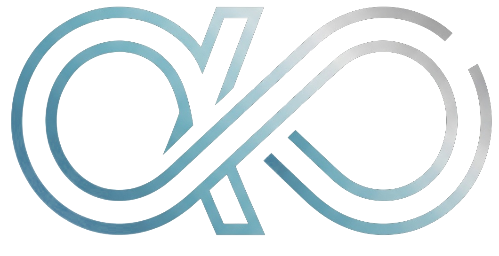

01 / DIST
Uncertainty
Model outputs are distributions with declared bounds, not unquestioned facts.
Dist τ · α · δA language built to make uncertainty, authority, resource costs and side effects explicit — before an AI agent acts.

Aletheia comes from the Greek idea of un-concealment: truth brought into view. For agentic software, that means making every uncertainty, permission and consequential action part of the program itself.
Model outputs are distributions with declared bounds, not unquestioned facts.
Dist τ · α · δCapabilities constrain what an agent can do, independently of what it says.
Cap[E] · ownTokens, time and money are part of a verifiable execution contract.
β ⪯ Δ · E6Untrusted inputs do not silently become trusted decisions or tool arguments.
Untrusted ⊑ TrustedInventory and telemetry come from the host snapshot, never from a prompt.
s.managed() · Trusted“An agent should not be trusted because it sounds certain. It should be trusted only where its effects can be justified.”
Not a wrapper around a chatbot. A compilation and execution stack with explicit stages — from typed programs to verifiable event journals.
Programs become a structured AST with source locations, typed expressions and precise diagnostics.
A few lines make the difference between an opaque agent and an execution whose authority and provenance are visible.
We publish measurable outcomes with their limitations. Formal theorems, differential backends and a real, deliberately partial adversarial evaluation.
19 of 144 attack pairs evaluated; 95% CI for Aletheia ASR: 0–17%. Not a claim of zero underlying risk.
Mechanized theorem families, with explicit model boundaries and audited axioms.
Generated programs across Lean, Rust ARX and Python, compared by canonical journal.
Attacker goals achieved in the published 3-repeat custom M1 run. Not AgentDojo.
Read the language. Inspect the proofs. Run the compiler. Challenge the assumptions.